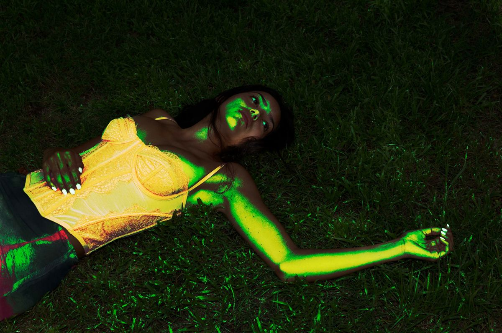
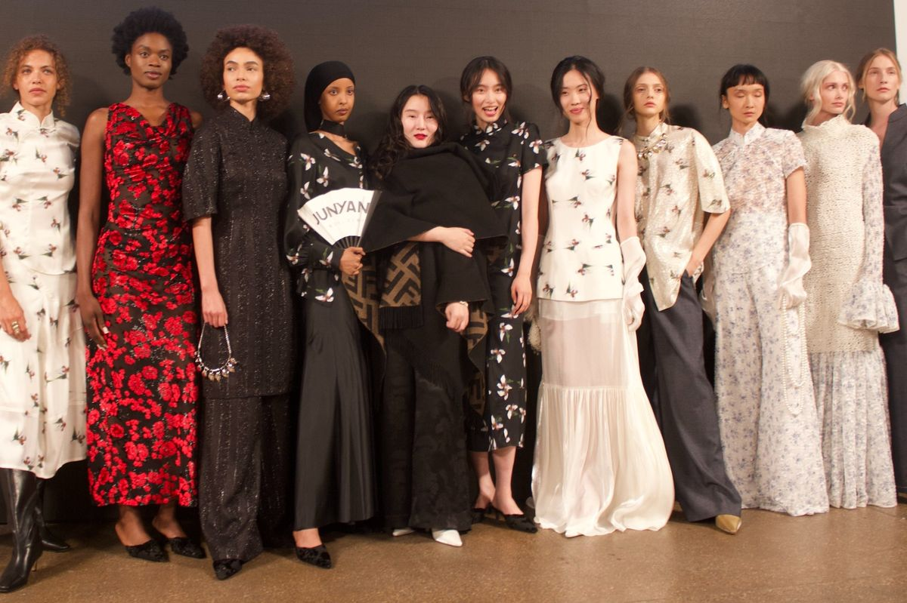
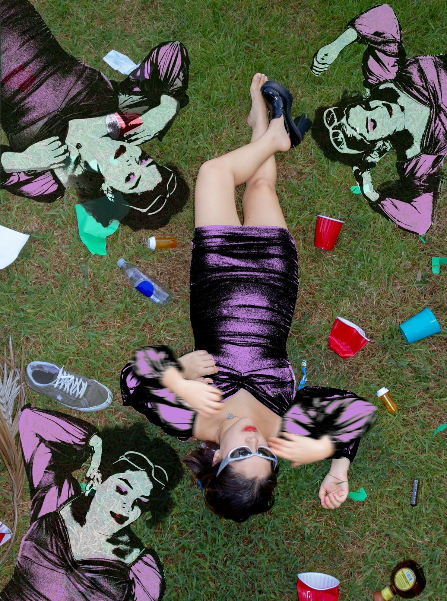
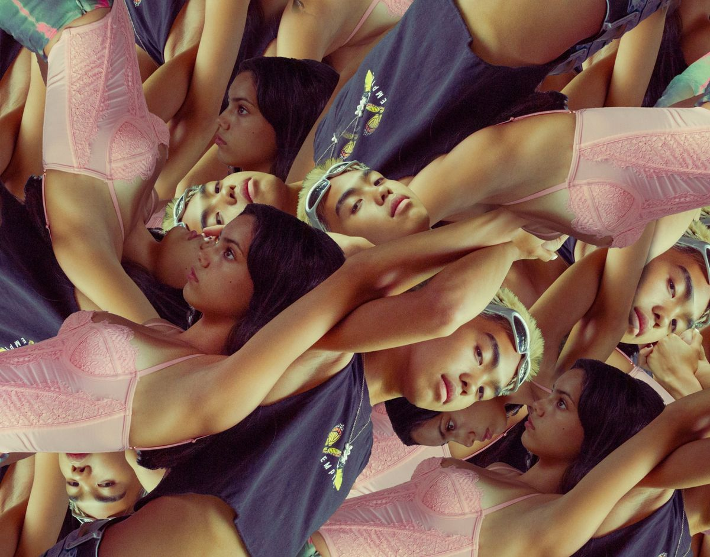
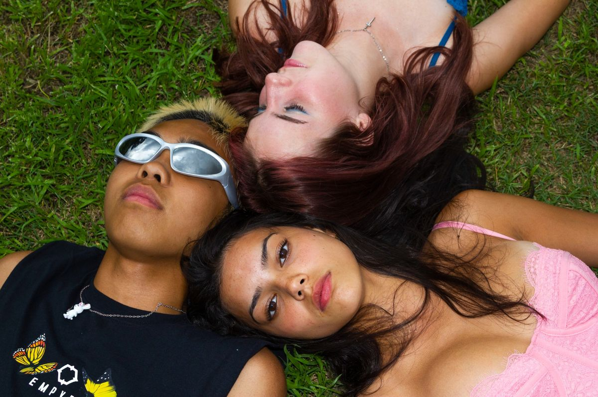
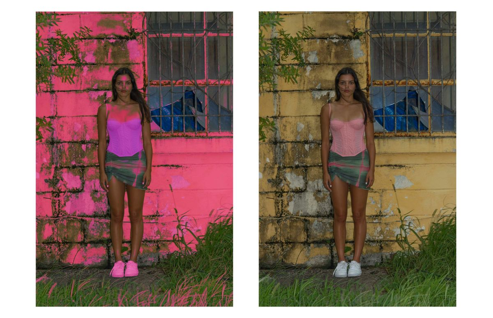

THE ARCHIVE.






Photography as exploration.
Photography is one of the ways I explore the relationship between identity, perception, and visual storytelling. I am interested in how images communicate ideas that cannot always be expressed through words. A photograph can capture a specific moment while simultaneously creating an entirely new interpretation of it.
My creative interests often revolve around people and the environments that shape them. I am particularly drawn to editorial photography, experimental compositions, and the relationship between subjects and their surroundings. I enjoy exploring how lighting, framing, movement, and color influence the emotional impact of an image.
I approach photography as both a technical and conceptual process. Camera settings, lighting decisions, and post-production are important, but I also think about the ideas behind an image. I want photographs to invite viewers to question what they see and consider perspectives beyond the immediately visible.
This archive is a space for developing that approach. It will grow to include editorial projects, independent experiments, and collaborations. I am interested in exploring visual narratives that challenge expectations and examine the complicated relationship between individuals and the collective.
Areas of exploration
- Editorial and fashion photography
- Portraiture and identity
- Experimental lighting and composition
- Visual storytelling and art direction
- Digital and analog experimentation
A STUDY IN FRAMES.
An interactive breakdown of my photographs from my visual archive, organized by creative discipline. Hover over each bar to explore the distribution of work across categories.
Hover over a bar to explore the archive.